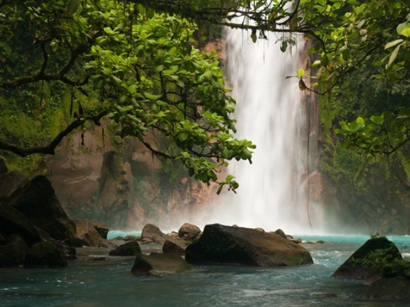

Ecotourism
- Café Verde Imports partners with Comunidad Connect to organize vacation trips to Nicaragua. We offer Sustainable Tourism Vacation Packages as well as All-Inclusive Resort Packages.

More Vacation Opportunities
Café Verde Imports partners with Comunidad Connect to organize many types of vacation packages. Besides our famous sustainable tourism trips Cafe Verdé Imports arranges luxurious ocean side resorts, quiet country suites, and urban hotels and hosteling.
Information
Sustainability in Nicaragua is only partially maintained through the purchase and sale of coffee beans. The other side of building the Nicaraguan economy is through sustainable tourism. Sustainable tourism is a unique way for travelers to experience Nicaragua. Groups spend half their time touring the country's famous cities such as the colonial city of León, historical Granada, the capital city of Managua, and the high mountains of Estelí. The other half of the trip takes place in rural Nicaragua, which is home to rainforest trees and plants, tropical animals, beautiful mountains, and vast coffee farms. In rural Nicaragua you will experience the rewarding satisfaction of doing volunteer service work while living in homestays in the mountains.
When staying with your host family, you will have the opportunity to:
Walk through the entire coffee making process from seeding to exportation.
Participate in the coffee harvesting process in the harvest months of December, January, and February.
Tour magnificent volcanoes and mountains.
Hike the many beautiful mountain sides and see beautiful waterfalls.
Work with your family in the kitchen, the yard, on your home, and more.
Learn how to ride a horse.
- Take guided truck rides through your community and to neighboring communities
Look out majestic view points, called “Miradores”
Observe exotic animals including bird watching
Learn the history of Nicaragua, the Contras, and the American influence throughout the 20th century that has affected life in Nicaragua today